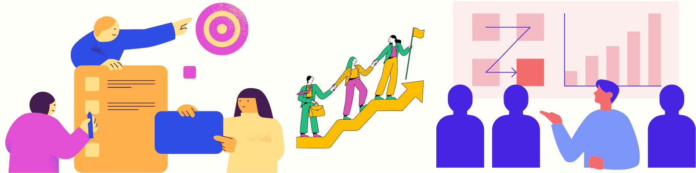

Product Sense

Beginner Level
- Definition and importance
- Key components of product thinking
- Case studies of successful data-driven products
- User research methods (surveys, interviews, focus groups)
- Creating user personas
- User journey mapping
- Tools: Google Forms, SurveyMonkey, UserTesting
- Types of product metrics (vanity vs. actionable)
- Defining success metrics
- A/B testing basics
- Tools: Google Analytics, Mixpanel, Amplitude
- Introduction to data-informed product development
- Basic statistical concepts for product decisions
- Tools: Excel, R, Python (Pandas, NumPy)
- Stages of product development (ideation, design, development, launch, iteration)
- Role of data professionals in each stage
- Agile methodologies and Scrum framework
- UX principles for data products
- Usability testing
- Tools: Figma, Sketch, InVision
- Identifying key stakeholders
- Effective communication with non-technical teams
- Tools: Slack, Trello, JIRA
Advanced Level
- Quasi-experimental designs
- Instrumental variables
- Regression discontinuity
- Tools: R (causal inference packages), Python (DoWhy, EconML)
- Multi-armed bandits
- Sequential testing
- Long-term experiment design
- Tools: Multi-armed bandit libraries in Python/R
- Viral coefficient and K-factor
- Churn prediction and prevention
- Customer lifetime value (CLV) modeling
- Tools: Python (Lifetimes library), R (survival analysis packages)
- Sentiment analysis of user feedback
- Topic modeling for feature requests
- Chatbots and conversational AI
- Tools: NLTK, SpaCy, BERT
- Image-based recommendation systems
- Visual search functionality
- AR/VR applications
- Tools: OpenCV, TensorFlow, PyTorch
- Demand forecasting
- Anomaly detection in product usage
- Seasonal trend analysis
- Tools: Prophet, ARIMA models in Python/R
- Modeling network effects
- Viral growth strategies
- Social network analysis for product adoption
- Tools: NetworkX, Gephi
- Dynamic pricing strategies
- Personalized user journeys
- Adaptive UI/UX
- Tools: OpenAI Gym, RLlib
- Load testing and capacity planning
- Optimizing data pipelines for product features
- Real-time analytics architecture
- Tools: Apache JMeter, Gatling, Apache Kafka
- Algorithmic fairness in products
- Explainable AI for product features
- Data privacy regulations and compliance (GDPR, CCPA)
- Tools: Fairness Indicators, LIME, SHAP
- Experimentation platforms
- Continuous experimentation
- Experimentation in ML model deployment
- Tools: Facebook’s PlanOut, Airbnb’s Airflow
- Unifying data across web, mobile, and IoT
- Cross-device user identification
- Omnichannel experience optimization
- Tools: Firebase, Mixpanel, Segment
- Decentralized data architectures
- Blockchain analytics
- Crypto-economic models
- Tools: Ethereum, Hyperledger, BigQuery Crypto
- AI for product roadmap planning
- Automated insight generation
- AI-assisted decision making
- Tools: Aible, DataRobot, H2O.ai
- Edge computing and 5G implications
- Quantum computing in product development
- Emerging data sources and their product applications
- Tools: AWS Greengrass, Azure IoT Edge, IBM Q
Behavioral Interview Questions
- STAR method (Situation, Task, Action, Result)
- Common behavioral questions for data roles
- Preparing impactful stories
Technical Interview Questions
- Data structures and algorithms
- SQL and database design
- Coding challenges in Python/R
Case Study Interviews
- Product sense case studies
- Analyzing product metrics
- Designing data-driven solutions
System Design Interviews
- Designing scalable data architectures
- Data pipeline design
- Real-time data processing systems
Machine Learning Interviews
- ML model design and evaluation
- Feature engineering
- Model deployment and monitoring
A/B Testing and Experimentation Interviews
- Designing A/B tests
- Analyzing experiment results
- Handling confounding variables
Product Management Interviews
- Defining product vision and strategy
- Prioritizing features
- Roadmap planning
Ethics and Privacy Interviews
- Handling ethical dilemmas
- Ensuring data privacy
- Compliance with regulations
Cross-Functional Collaboration Interviews
- Working with engineering teams
- Communicating with stakeholders
- Leading data-driven projects
Mock Interviews and Practice
- Conducting mock interviews
- Peer feedback
- Continuous improvement
{kind=link}